Where Did All the Elements Come From?
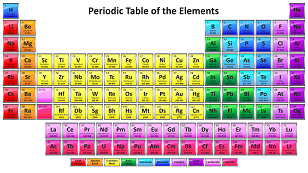
The periodic table of elements shown on the left represents all the elements that have been identified. Since the evidence shows that the universe started with mostly hydrogen, a curious person would ask "where did the rest of these elements come from?". A technical description would say that they all were created by fusion processes. That is, lighter atoms get fused together in order to form the heavier elements. A less technical description would say that all the elements heavier than helium were created through stellar evolution. The least technical description would say that all the elements heavier than helium were created during the last few seconds of stars just as they exploded out of existence.
The fact that all the elements that make up our bodies (99% of the mass of our bodies is made up of six elements: hydrogen, oxygen, nitrogen, carbon, phosphorus and calcium), and all the elements that the earth is composed of were created in stars that no longer exist is one of the most profound scientific discoveries. While we may never be able to answer the ultimate question: "Where did we come from?", we at least have a starting point. Except for hydrogen, every atom in our bodies, every atom on earth was created during the last few seconds of stars that had reached the end of their life cycle.
In order to understand the process of element creation, please take this historical tour of how humans viewed and tried to explain what everything was made of. There, we visit the discoveries that profoundly changed our views of what things are made of and follow the evolution of our knowledge of atoms and what they are made of.
Bring Forward from History
The Historical Tour found in the link above explained the important features of atoms and how those features were discovered. We will bring forward some important experimentally verified discoveries mentioned in the Tour to begin our discussion of where elements come from:
- All visible matter in the universe consists of atoms.
- A simple view of atoms is that they consist of protons, neutrons, and electrons.
- The center of an atom is called its nucleus and consists of protons and neutrons.
- Outside the nucleus, occupying different energy shells are electrons.
- Protons and neutrons have substructures which are made up of combinations of quarks.
- Quarks are fundamental elements, that is they do not have a substructure.
As measuring and observational instruments became more precise, scientists were able to more accurately determine the composition of the universe. Of the total mass in the visible universe, hydrogen contributes slightly less than 75% and helium contributes slightly less than 25%. So the rest of the elements in the Periodic Table account for less than 1% of the total mass in the visible universe. However on Earth, by mass, hydrogen and helium combine to contribute less than 1% of the mass. So the Earth is physically quite different in composition from the rest of the universe. Our planet is the exception rather than the rule. As we are going to see, Earth could not form until many generations of stars played out their life cycles first because 99% of the mass of the Earth consists of heavier elements.
It is apparent from observation of stars in our own galaxy that all stars have a life cycle. Scientists have been able to catalog the different parts of this life cycle. Since there are about 200 billion stars in our galaxy (The Milky Way), there are plenty of examples of stars that are just forming, stars that have already formed, stars that are approaching the end of their life cycle, and stars that have reached the end of their life cycle. The study of star life cycles is an excellent example of how scientists with today's technology formulate theories based on observation.
Scientists take data from thousands of observations of star life cycles, formulate a mathematical model of what they see, and with the help of computers are able to run simulations using their model to see how close the simulations agree with the observations. The mathematical model is tweaked until it agrees with observed data. This iterative process continues until a stable model is obtained. If the model is then able to predict correctly the outcome of a set of inputs, the model then is used as a basis for a theory. Since scientists cannot perform experiments on real stars, they use the mathematical model instead. The nice advantage of such a model is that it can be manipulated like an experiment to perform "What if's". Once a model is sufficiently developed, it is used to push the current theory to its limits. For example, a good "What if" would be: What if we tried to form two stars out of the same dense cloud of hydrogen to form binary stars? (Binary stars are two stars that are locked in an orbit around each other.) The answer to this "What if" would give scientists insight into how binary stars are formed.
How Stars Are Formed: First They Are Protostars
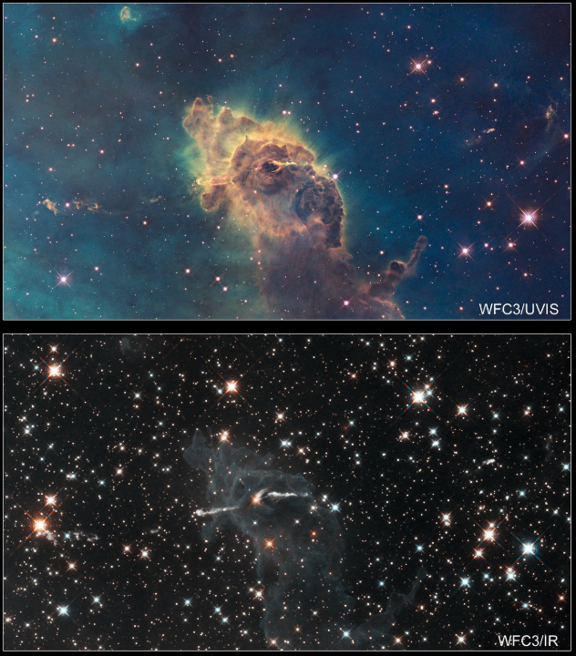
So based on observational data and the resulting models it is apparent that stars are definitely formed out of clouds of hydrogen. Just to be technically correct, most of the hydrogen is in molecular form. Molecular hydrogen is just two hydrogen atoms that have paired and share each other's electrons. The upper image to the left shows a cloud of gas (called a nebula). This nebula is named the Carina Nebula. The lower left image is the same nebula, but photographed in the infrared end of the spectrum. (The infrared end of the spectrum is light that is past the red end and is not visible to the unaided eye.) Infrared light is able to pass through the dust that is inside the cloud. In looking at the infrared image, you can see stars that were hidden by the clouds. Those stars that were hidden inside the cloud are new stars that were just formed from the hydrogen inside the cloud. You can click on the image to see an enlarged version in a new tab. Please resist the temptation to characterize the cloud as some kind of strange looking monster or god.
While the density outside the Carina Nebula is about 1 molecule per cubic centimeter, the density inside is about a million molecules per cubic centimeter. With this density, the mass of the atoms is enough that gravity causes the atoms to move together in clumps. Clumps are formed because the gas cloud does not have a uniform density. In doing so, each clump becomes more dense and becomes a stronger gravity well. The increased gravity draws in more gas and eventually the pressure from the mutual attraction of the gas molecules causes the gas clumps to heat.
If we zoom in on one of the clumps, we would notice that there is a battle raging between two forces. Gravity pulls the gas molecules inwards towards the center while heat from the increased pressure pushes the gas molecules away from the center.
If the gravitational pull inwards equals the push outward caused by heat, then the clump is in a hydrostatic equilibrium. A clump in hydrostatic equilibrium is called a protostar. Depending upon how much mass is involved, a protostar can remain in equilibrium for millions of years. Stars of the mass of our own sun remain as protostars for about 10 million years. Note that a protostar is just hot gas. There is no nuclear fusion taking place.
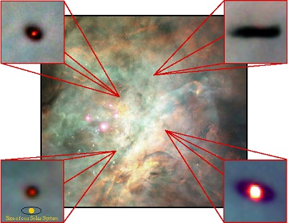
At this point it would be a good idea to consider the size scales of clouds and protostars. A typical nebula which contains multiple protostars is on the order of 1014 km. That is 100,000,000,000,000 km. This is about 10,000 times larger than our solar system out to Neptune. A few clumps of protostars is of the order 1012 km, or about 100 times larger than our solar system. A typical protostar is about 1010 km, which is about the size of our solar system out to Neptune.
To the left is an image taken by the Hubble Telescope that shows four protostars in the Orion Nebula. Notice at the lower left of the image is a scale comparison to our solar system.
Even though a protostar is just gas heated from gravitational pressure, it is still hot. Protostars can radiate much more light than our sun. The temperature of a protostar can get to about 17,000 degrees Fahrenheit. While the protostar remains in equilibrium, it still attracts more mass from the nebula in which it was created. Over a few million years of attracting mass, if the gravitational attraction inwards exceeds the outward pressure caused by heat, the protostar starts to collapse. At this point the density in the core becomes high enough that the hydrogen atoms start a nuclear reaction and a star is born. If, however the protostar does not accumulate enough mass to cause gravitational collapse, then the protostar becomes what is called a brown dwarf. A brown dwarf is still hot, but not enough to start a nuclear reaction. It has been found by observation that if a protostar together with its cloud has a mass that is less than 8% of the sun's mass, then it will form a brown dwarf.
An interesting byproduct of the study of protostars is that as the protostar is forming, it spins forming a disk of gas and dust around the protostar. The contraction due to gravity of the newly forming protostar causes it to spin just as a skater spins by folding her arms close to her body. As the protostar spins, the centripetal force (outwards) at the equator balances further gravitational collapse. However at the poles there is no centripetal force to counter balance gravitational force and so at both poles the mass collapses thereby shaping the protostar into a disk. The disk is called a protoplanetary disk. And this is how planets, at least gas planets like Jupiter, Saturn, Uranus, and Neptune were formed.
- Further discussion of protostar formation.
- Video on how protoplanetary disks form.
- Further explanation on star formation.
Protostar Becomes a Star
Let's now take a closer look at the process when a protostar becomes a star. A few paragraphs back, I said that a protostar in equilibrium (gravity balances outward pressure caused by heat) can spend millions of years accumulating more mass from the gas cloud in which it was formed. If there is enough mass (mass is greater than 8% that of our sun) in the gas cloud, eventually the gravity generated by the added mass will be stronger than the outward pressure caused by heat, and the protostar will start to collapse. As the protostar collapses, its core density becomes high enough to cause the hydrogen atoms to start a process called nuclear fusion. Generally speaking, if you take two or more lighter elements and fuse them together, they will form a heavier element. In the case of a new star, the hydrogen atoms are fused together to form helium. So we start out with hydrogen (one proton in its nucleus and one electron) and end up with helium (two protons, two neutrons, and two electrons).
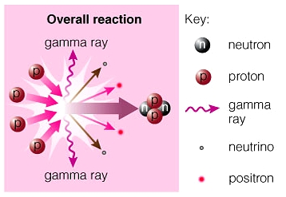
In the image to the left we see an overall schematic of the fusion of hydrogen to form helium. The red spheres with a "p" represent the nucleus of a hydrogen atom (one proton). The dark gray spheres with an "n" represent neutrons. And the resulting object with two "p" and two "n" is a helium nucleus. Notice that it takes 4 hydrogen nuclei to form one helium nucleus. Observe also that at the point in the schematic where the four hydrogen nuclei come together, something wild happens (as indicated by the white flash and other stuff such as gamma rays, neutrinos and positrons flying from the reaction). I will explain later what happens in the middle of the white flash. For now, it is important to have an overall picture that it takes 4 hydrogen nuclei to form one helium nucleus. If we look at how much mass we started with in four hydrogen nuclei and how much mass is in the resulting helium nucleus, the numbers do not add up.
- Mass of one hydrogen nucleus (i.e. a proton) = 1.6735326 × 10-27 kg
- Mass of four protons = 6.6941304 × 10-27 kg
- Mass of one helium nucleus = 6.6464731 × 10-27 kg
So we start with a mass of 6.6941304 × 10-27 kg (four hydrogen) and end up with a mass (one helium) of only 6.6464731 × 10-27 kg. There seems to be a mass of 0.0476573 × 10-27 kg missing. That is, we are missing about 0.7% of the mass of the original four hydrogen nuclei after helium is produced. You may think that this loss of mass is not significant because for example, you can burn a piece of paper and end up with ashes that weigh less than the original piece of paper. However, if you first weighed a piece of paper, put it in an enclosed chamber, burned it and weighed all the products of combustion including the gases emitted, the mass of the products of combustion would exactly equal the mass of the original piece of paper. Remember that combustion is a chemical reaction where the heat produced by burning the paper is the result of chemical bonds being broken and new ones being formed. Therefore nuclear fusion is not a chemical reaction.
Let's look at the missing mass, 0.0476573 × 10-27 kg. We can actually calculate how much equivalent energy that the missing mass represents. We can make use of Einstein's equation E = mc2, where energy = mass × (speed of light)2. The speed of light in the proper units of measure is 3 × 108 m/sec.
- E = (0.0476573 × 10-27 kg) × (3 × 108 m/sec)2
- = 4.2892 × 10-12 kg m2/sec2
- = 4.2892 × 10-12 J
The unit J is a Joule, which is just a unit of measure of energy. Therefore the mass of 0.0476573 × 10-27 kg of hydrogen is equivalent to 4.2892 × 10-12 J of energy. So the conclusion that we can make when four hydrogen atoms are fused to form one helium atom is that the product of the fusion contains less mass than the reactants (four hydrogen atoms). Therefore the missing mass is released as energy. To put this energy number in perspective, a typical nuclear warhead of yield of 150 KT on a missile contains about 1 kg of hydrogen. But keep in mind that of the 1 kg of hydrogen, only 0.7% or 7 grams of hydrogen is actually converted to energy. The rest of the hydrogen is fused into helium.
Let's return to the process of how hydrogen is fused to form helium. In the above image labeled "Overall Reaction", there is a white flash where the four hydrogen nuclei come together and out of that flash comes a helium nucleus. We will now look at what happens in the white flash.
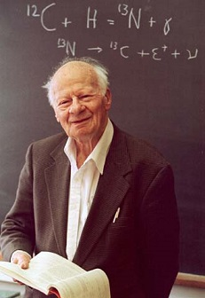
Up to the late 1930's it was not exactly known how hydrogen nuclei (two protons) fused to form helium. By doing the math, if you try to fuse two protons together, you get an unstable nucleus because the two protons mutually repel each other since they have the same charge. Something was missing in the model. It was known at the time that in order for a nucleus to contain more than one proton, the nucleus must contain neutrons. One special property of neutrons is that they provide the binding energy that holds the nucleus together. So using results from a paper published by George Gamow and Carl Friedrich von Weizsäcker, Hans Bethe proposed first that one of the protons "turns into" a neutron and that the path to a helium product involved a multi-stage process that is now called the proton-proton chain reaction.
It is interesting to note that man-made nuclear devices use the proton-proton chain reaction. These devices actually achieve the temperatures necessary to drive the same fusion process we see in the sun.
Star Reaches End of Its Life Cycle
Let's get back to element creation. So far we can account for hydrogen and helium which were formed in the big bang. And as stars form they carry out most of their lives fusing hydrogen to form helium. This stage of a star's life is called the Main Sequence. This stage takes up about 80% of the star's total life. During the Main Sequence, the star fuses hydrogen and the outward pressure from radiation and heat balance the pull inward of gravity and the star is in hydrostatic equilibrium. Since the product of hydrogen fusion is a heavier element, namely helium, that product sinks to the star's core. During the Main Sequence the temperature of the core is not high enough to fuse helium, so the core is basically full of inert helium, and therefore the core does not add any more energy to the star.
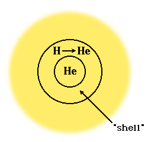
When a star's core contains enough inert helium, its outward pressure from radiation and heat are not enough to balance the pull inward of gravity and the star falls out of hydrostatic equilibrium. When a star first falls out of hydrostatic equilibrium, it enters the post-Main Sequence part of its life. Since gravity now dominates, the core becomes more dense and therefore becomes hotter from the compression. This heat from compression is enough to fuse what hydrogen is left just outside the core. (Remember that since hydrogen is less dense than helium, the remaining hydrogen is forced to the outer part of the star.) The remaining hydrogen adjacent to the helium core undergoes rapid fusion. This stage is called the Hydrogen Shell Fusion Stage. For stars the size of the sun, this stage lasts for a few hundred million years.
During the Hydrogen Shell Fusion Stage, the energy from the compression of the core is actually greater than the energy generated by hydrogen fusion during the Main Sequence. So during the Hydrogen Shell Fusion Stage in the outer hydrogen shell the outward pressure from heat overcomes the inward pull of gravity and the outer layers of the star start to expand away from its core by more than 100 times the star's original size. When a star reaches this kind of expansion, it is called a Red Giant.
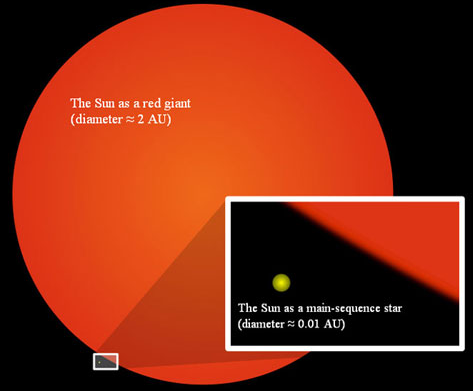
In the image above, the current size of the sun in its Main Sequence is shown as a small dot in the lower left. Its present diameter is about 0.01 Astronomical Unit (AU). An AU is the distance from the center of the sun to the center of the earth. The large red circle represents the sun as it will appear as a Red Giant whose diameter will be about 2 AU.
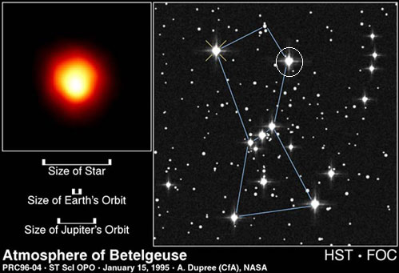
The image above shows a Red Giant named Betelgeuse that is located in the Orion Constellation. The star Betelgeuse is located in the upper right of the Constellation. In the lower left is an inset that shows the relative sizes of Betelgeuse, Earth's orbit and Jupiter's orbit.
Element Creation in Smaller Red Giants
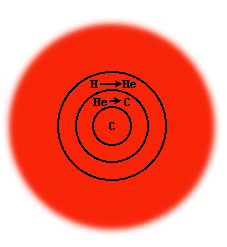
While the outer shell of the Red Giant gets all the attention, the inner core is where the interesting processes take place. During the Red Giant stage, the core temperature is high enough to finally begin the fusion of helium. First, three atoms of helium fuse to form beryllium. The beryllium does not last long as it fuses with helium to form carbon. Since carbon is more dense than helium which in turn is more dense than hydrogen, the carbon settles at the core, then it is surrounded by a shell of helium which in turn is surrounded by a shell of hydrogen.
If the Red Giant star has a mass less than 1.4 times that of the sun, it slowly fades away with nothing left to do. It does not have enough thermal energy to fuse any of its contents. You can see now that the mass of a star determines just how far down the periodic table element creation can go. And therefore, the mass of a star determines how many element shells it can create.
As the Red Giant cools, its size shrinks. The amount of light emitted decreases over time. While this object is still visible, it is called a white dwarf. A star originally the size of the sun that has become a white dwarf shrinks to the size of Earth. It still has about 70% of the mass of the sun, but is only Earth size. A sugar cube size piece of a white dwarf would weigh about 4,000 lbs on Earth. Our own sun will become a white dwarf.
Before the white dwarf loses all of its luminosity, its light illuminates the outer layers of the star that were left out in space during the star's collapse. White dwarfs in this stage are called "Planetary Nebula". The name is a misnomer because there are no planets involved. They are some of the most beautiful objects that can be seen with a telescope since the different layers of oxygen (in larger stars), carbon, and helium when irradiated by the light of the white dwarf emit colors. Below is an image taken by the Hubble of a ring nebula. Notice the small white dot in the center. That is the still visible white dwarf. The other small white dot to the right of the white dwarf is just another distant star behind the nebula.
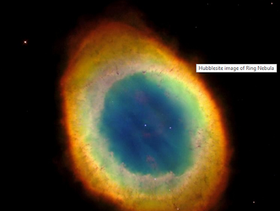
Once you have seen the beauty of one nebula, you may want to visit these:
- Hubble: Cat's Eye Nebula
- Hubble: Red Rectangle Nebula
- Hubble: Hourglass Nebula
- Hubble: Helix Nebula
- Hubble: Eskimo Nebula
- Hubble: Spirograph Nebula
I encourage you to download these images and enjoy them as larger images. Or better yet, display them on your home TV in their full size.
The End of Large Red Giants: Supernova
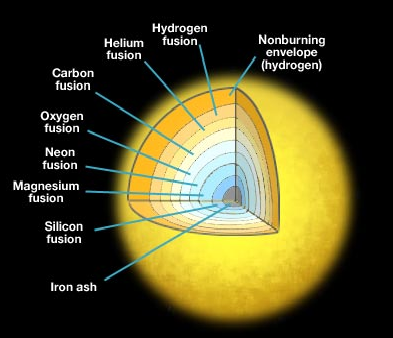
In our quest to find the creation of all the elements, the white dwarf is a dead end. At least we found how some of the lighter elements are formed, but to find the creation of the heavier ones, we must look at stars that are about eight times bigger than our sun. When a star of that mass becomes a Red Giant, the star core has enough thermal energy to continue the fusion process and to create more elements heavier than carbon or oxygen. This also means that the star will have more core layers, each one for a separate element. Carbon and oxygen fuse to form neon, then magnesium, then silicon, and silicon fuses to form an isotope of nickel, but that isotope is radioactive and it decays to iron. Again, notice that the layers are arranged in increasing mass from the outer to the most inner.
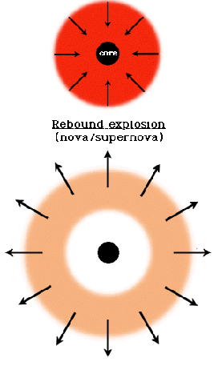
If you were to analyze each fusion reaction, you would notice that each fusion reaction of the elements from silicon up to hydrogen (going from heavy in the center to lighter elements in the outer shells) has a common trait. The products of the fusion reactions always have less mass than the reactants (remember that helium has less mass than the four hydrogen reactants). This is because some of the mass of the reactants is converted to energy. This nice little pattern comes to an abrupt halt with iron.
Iron has the most stable nucleus of all the elements. In fact, instead of releasing energy when fused, the product of iron fusion actually absorbs energy. So when a giant star starts to produce iron, it has reached the end of its ability to produce new elements. There is no star in the universe that can fuse iron. So if we depended upon stellar fusion to produce our elements, our periodic table would stop at iron. Where can we get some energy to finish the periodic table?
Let's return to the giant star where there is no release of energy in the iron core, hydrostatic equilibrium is upset and gravity starts to dominate. The iron core of the star starts to undergo a process called photodisintegration. This term consists of two parts: photo, which references photons, which are light (Gamma rays), and disintegration which means that the iron nuclei break apart. So the iron absorbs a high energy Gamma ray and emits either a proton, a neutron, or an Alpha particle (remember that an Alpha particle is just a helium nucleus: two protons and two neutrons). This photodisintegration process actually absorbs energy as the iron nuclei are broken down. What the iron nuclei break into is not important. The important point is that the core of the star starts to absorb energy. The iron core is so dense that the photodisintegration spreads rapidly throughout the core causing rapid cooling and hence rapid contraction. The core contraction reaches tens of thousands of kilometers per second. There is a physical limit to how small the core can contract (due to what is called neutron degeneration). So in an instant of time, literally an instant, the center of the core behaves as a solid immovable object while at the same time the outer part of the core (the non-iron part) is racing inwards at tens of thousands of kilometers per second. So we have the proverbial paradox: The irresistible force meets the immovable object.
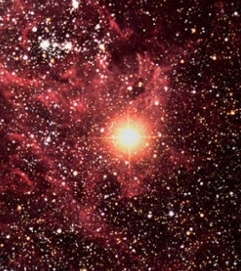
If you start with a giant star that no longer has the ability to generate outward thermal pressure, and gravity takes over, you know something spectacular is about to take place. The object becomes what is known as a supernova. The energy released in an instant by the collision of the outer core with the inner iron core is about equal to the total amount of energy that the sun releases in its 10 billion year lifetime. That is 1029 one Megaton thermonuclear weapons. However the release of the energy in a supernova occurs in less than a second. Please ignore any descriptions of a supernova that refer to an explosion. The release of energy is actually caused by an implosion of the outer core meeting the inner iron core. The energy released is the kinetic energy (energy of motion) that is emitted by the collision.
The image on the left is the first ever picture of a supernova. It was taken from an Earth based telescope in 1987, before the Hubble was launched. This supernova, called SN 1987A, was first detected on Feb 23, 1987. Previous to this date the object was called Sanduleak −69° 202. So on the Earth date Feb 23, 1987 light from the star called Sanduleak −69° 202 indicated that the star ceased to exist and it became a supernova. Of course, the actual supernova exploded about 168,000 years ago. Light is such a slow medium to carry information. This star is outside of our own galaxy and resides in a nearby dwarf galaxy called the Magellanic Cloud. The flash lasted a few days and was visible with the naked eye. In the image the supernova looks like a star close by in our own galaxy, maybe 1,000 light years away. Compare the supernova's luminosity with the other stars in the cloud.
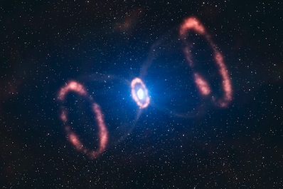
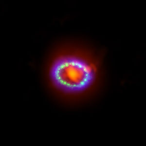
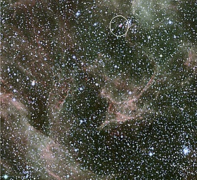
The image on the upper left is that of SN 1987A, taken about 10 years ago by the Hubble. The blast waves traveling in opposite directions were about 1 light year apart. The ring around where the star's center was previously is gas that was part of the Red Giant's outer hydrogen shell. This gas was given energy by the shock wave as it passed through the shell. The image in the upper right is a close-up of the illuminated outer shell. Please use this link to get an update on the information that has been collected over the last 30 years. Here is a video of images and simulations that illustrate the phenomenon of SN 1987A.
In the image to the left you can spot the remnants of SN 1987A as it still sits in the Magellanic Cloud. I have circled it in the top just to the right of the center of the image. It is a small purple dot. If you are ever out that way, just look for the small purple dot. It will help you to find your way home.
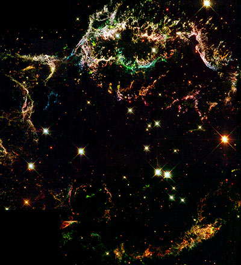
Hubble has been able to photograph images from many supernova remnants. The one to the left is Cassiopeia A. The light from this event reached Earth about 300 years ago after traveling a distance of about 11,000 light years. The outer edges measure about 10 light years across.
Element Creation From a Supernova
There is ample release of energy in the supernova to fuse the elements beyond iron. In fact, most of the rest of the periodic table is filled in by the supernova implosion. But there are two other benefits from the implosion. The heavier elements created in the supernova are dispersed into space at very high speeds. And a shock wave (see the two shock waves in the upper left image above) of extremely large magnitude is also sent to propagate through space.
The heavier elements in turn serve two purposes. First they will get caught up in another hydrogen gas cloud and will become part of another protostar. If that protostar reaches a Main Sequence, then becomes a Red Giant, and if its mass is large enough, goes into a supernova, those elements undergo another fusion to form more heavy elements. So in a galaxy with 200 billion stars a lot of heavy elements will be created and dispersed from supernovas. Secondly the heavier elements can form a planetary disk around a new star and the debris will form rock planets like Mercury, Venus, Earth and Mars.
The shock wave caused by a supernova has so much energy that it can also serve as a "push" that initiates fusion in newly forming protostars. That is, the shock wave has enough energy to compress a protostar so that it goes into Main Sequence and its hydrogen starts to fuse. A supernova is not just the end of a star, but it provides the seeds for the next generation of stars and possible planets.
When scientists take a spectrum reading of our own sun, they detect spectral lines from nitrogen, sodium, magnesium, iron, silicon, and even rare elements such as europium and vanadium. Since our sun (and many other observable stars) is too small in mass to create these elements (remember that our own sun will become a white dwarf and therefore will not experience a supernova), we can conclude that these elements come from ancient supernovae implosions. The elements were thrown into space by the shock wave and got mixed in with the gas that our sun was created from. We can also conclude that the heavy elements that form the Earth and all life on the planet come from supernovae events that occurred prior to the formation of the sun.
So now you know how all of the elements that make up our world and the rest of the non-hydrogen in the universe were made. You know that every atom in your body except for the hydrogen came from a supernova event. That is, from a star in the last moments of its life cycle. This brings our story to a close. However, it is difficult to end the story of star life cycles here. There are other consequences of supernova that form highly unusual objects that are not stars. If you are interested to find out what happens after a supernova, please read on.
Formation of Neutron Stars and Black Holes
A supernova is certainly the end of a star as it once existed. The rebound of the collapsing core blows off all the material that is outside the core. However, the mass of the material that is ejected by the supernova event is small compared to the mass of the remaining core. Since we have been concerned with element creation, we followed the fate of the ejected matter outside the core. But if we return to the core just before the supernova event, we would find the core to be composed of "degenerated neutrons". Degenerated neutrons are formed when the protons and electrons of the iron atoms in the core are compressed with such a force that they actually fuse together to form neutrons. The core is composed of about 90% neutrons with the rest of the mass remaining as protons and electrons.
If the mass of the original star is less than eight times the mass of our sun (but still greater than 1.4 times the mass of our sun), the collapsed core forms what is called a "Neutron Star". This Neutron Star is about 15–30 km in diameter. So the density is so great that a sugar cube volume of a Neutron Star would have a weight of over a billion tons on Earth. A Neutron Star does not create any energy. It is extremely hot, but there is nothing to fuse. The only emissions from a Neutron Star are high energy X-rays. Therefore the only way for scientists to "see" a Neutron Star is to use X-ray telescopes.
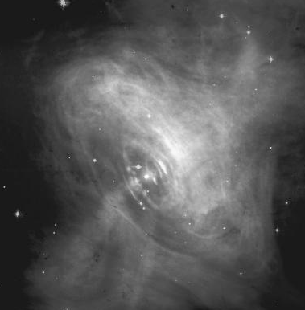
The collapse into a Neutron Star causes the core to spin at several hundred times per second. The fastest spinning Neutron Star has been clocked at 716 revolutions per second which gives a surface speed of about 1/4 the speed of light. The spinning Neutron Star emits radiation from its magnetic poles. Since the magnetic poles of most Neutron Stars do not coincide with their rotational axis, the emission beam will sweep the sky and an observer in its path will detect a pulse of radiation as the beam sweeps past (like light from a lighthouse). This phenomenon was originally detected in 1967 and at the time scientists assigned the name Pulsar. It was later shown that Pulsars are actually Neutron Stars. The X-ray image to the left shows a bright object in the center of the Crab Nebula. That bright object is a Pulsar (Neutron Star).
If the mass of the original star is about eight times greater than the mass of our sun, then the collapse of the core follows a different path. The mass is so large that the collapse bypasses the Neutron Star formation. The mass in the core is compressed to such a degree that its density is almost infinite. This entity is commonly known as a stellar Black Hole. A stellar Black Hole (or just Black Hole here) contains the mass of the star's original core so the mass of a Black Hole is not infinite. How can its density be almost infinite, but its mass is finite?
Remember that density = mass/volume. So if the mass remains constant and the volume becomes increasingly small, then the density will become increasingly large. Be aware that the concept of infinity is but a mathematical one. In calculating density, for example, we say that as the volume approaches zero, the density approaches infinity. Infinity is not a number, but rather a concept of an entity that has no bounds. For example, there is no bound on the size of the set of integers. So we say that the size of the set of integers is infinite. In addition the size of the set of odd integers is also infinite. So it is normal to ask: If there are an infinite number of integers, and half of them are odd, how can the set of odd integers also have infinite size? This illustrates that infinity is not a number, but rather is a concept of an entity with no bounds.
Whenever we use a mathematical model to describe an entity in the physical world, and that model says the value of the entity is infinite at some point, then the model is said to have a singularity at that point. The General Theory of Relativity (GTR) allows for a Black Hole to be a singularity in the model. This means that the GTR cannot be used in calculating the density of a Black Hole. That is, a Black Hole is outside of the scope of the GTR. So even though the GTR can be used to calculate the behavior around a Black Hole, there is no model for the behavior inside a Black Hole.
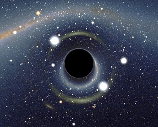
You have most likely seen drawings of black holes that show a big black sphere. The black sphere itself is not the Black Hole. Inside the black sphere is the singularity of infinite density. Technically, it is the singularity that is the Black Hole. The singularity has such a large gravity pull that it distorts the space around it enough so that light emitted by the singularity cannot escape. That is why a Black Hole is depicted as a black sphere. The black sphere is called the event horizon. Now the size of the event horizon is determined by the mass of the singularity inside. The more massive the singularity, the larger is the event horizon. Any light emitted from inside the event horizon is permanently captured by the gravity well of the singularity and therefore never escapes. In fact, any light from behind a Black Hole that touches any part of the event horizon is also captured. Any light that passes near to but outside the event horizon is bent inwards towards the singularity. Please consult the Hubblesite for answers to common questions about Black Holes, including physical evidence from observations.